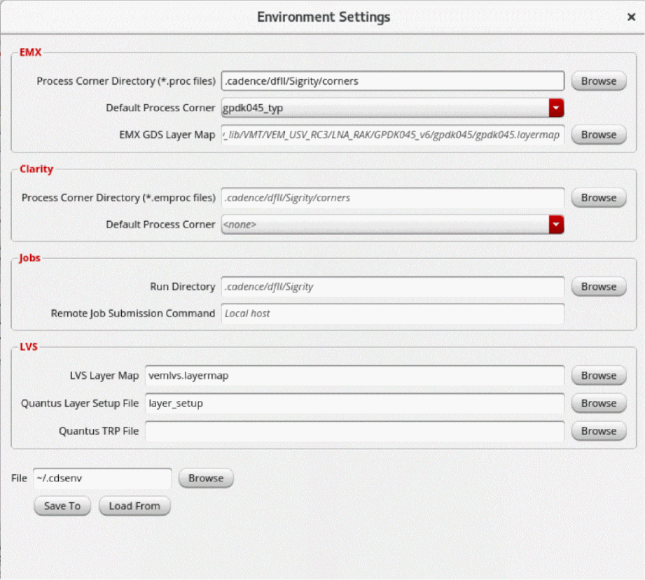

Configuring Process Settings for IC Layouts
For an IC layout, you also need to define the process settings that provide the physical layer stack information required by EM solvers to create and solve a model.
For the models that use Clarity 3D Solver, layer stack information is available in one of the following files provided by the foundry:
If you do not have these files, you can provide your own process corner.emproc files with custom stackup information. In a process corner file, you need to add references to the technology files or add custom stackup details.
For the models that use EMX 3D planar solver, you just need a standard .proc EMX process file. Check with your foundry if they provide this file. Check the EMX User Guide for more information on the EMX process file format.
When you have process corner files or technology files for your design, configure the process corner settings for the EM models by performing the following steps:
-
Choose Settings – Environment on the toolbar of the Electromagnetic Solver assistant.
The Environment Settings form is displayed.
 -
For the models that use EMX 3D Planar, specify the path to the process corner directory and the name of the default process corner in the EMX section. Ensure that the
.procfiles are saved at this path.
The Process Corner Directory field in the EMX section depends on the value set for theemxProcessCornerDirectoryenvironment variable. When this variable is set to"", the tool considers.cadence/dfII/Sigrity/cornersas the path. Similarly, the Default process corner field in the EMX section shows the corner name specified by theemxProcessDefaultCornerenvironment variable. When multiple process corners are defined, the tool uses the corner specified in this field. - For the models that use Clarity 3D Solver, specify the path to the process corner directory and the name of the default process corner in the Clarity section.
-
By default, the Process Corner Directory field in the Clarity section depends on the value set for the
processCornerDirectoryenvironment variable. When this variable is set to"", the tool considers.cadence/dfII/Sigrity/cornersas the path. Similarly, the Default process corner field in the Clarity section shows the corner name specified by theprocessDefaultCornerenvironment variable. When multiple process corners are defined, the tool uses the corner specified in this field. -
(Optional) If the process corner settings are saved in a
.cdsenvfile, click Load From to load the settings from that file.
Related Topics
Format of the Process Corner Setting File Referring to an ICT or QRC Technology File
Format of the Custom Process Corner Setting File
Return to top